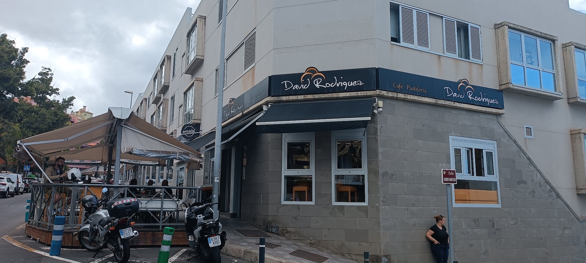
01
Santa Úrsula
Der Ursprung · unsere Backstube
- Adr.
- Carr. Provincial, 88 · 38398 Santa Úrsula
- Öffnungszeiten
- Täglich · 8–24 Uhr
- Tel.
- 651 88 37 77
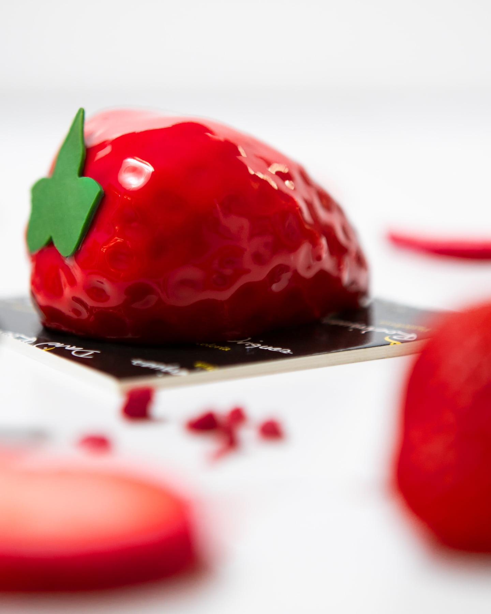
Die Erdbeere, eines der Stücke aus der Vitrine
Autorenkonditorei · Teneriffa · seit 2017
— Jesús David Rodríguez, Konditor (übersetzt)
Französische und katalanische Patisserie mit eigenem Design. Butter, reine Schokolade und echtes Obst, alles täglich frisch aus unserer Backstube in Santa Úrsula.
4,2★★★★★3.061 Bewertungen bei GoogleTorten auf Bestellung
Geburtstag, Taufe, Kommunion oder einfach so. Wähle Torte, Größe und Füllung; die Bestellung kommt mit allen Details per E-Mail bei uns an, und wir bestätigen Preis und Design schriftlich, bevor wir sie backen.
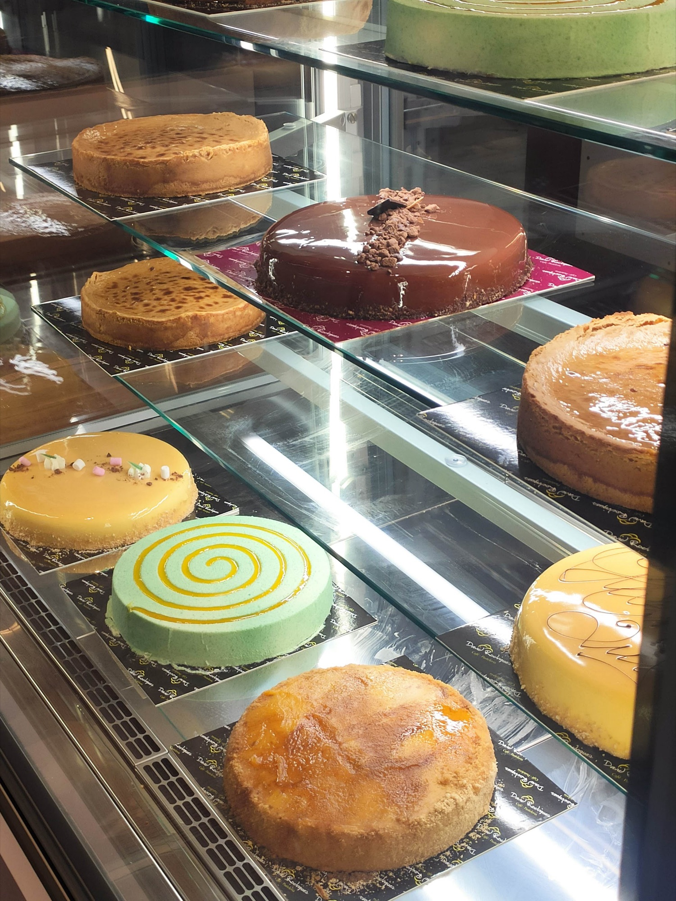
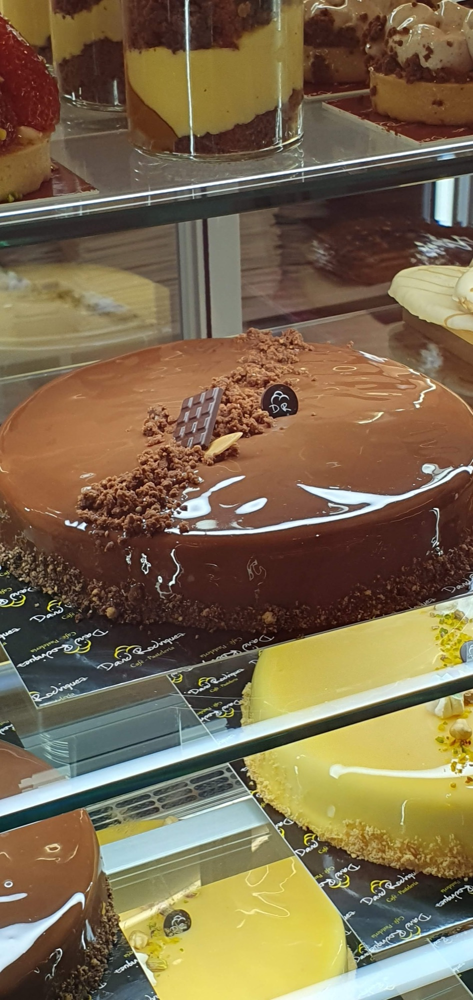
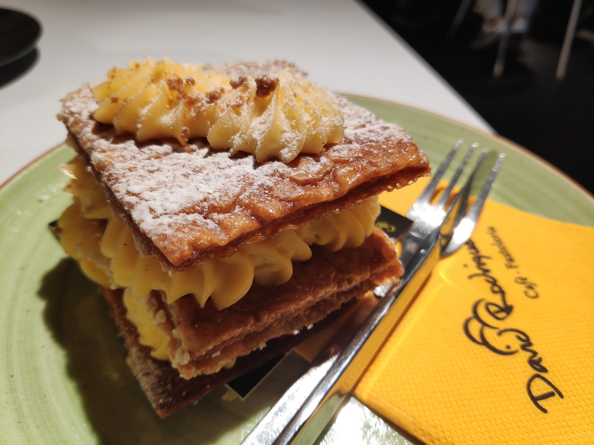
Richtpreise für die kleinste Größe, aus unserem Onlineshop 2025. Den Endpreis für Größe und Design bestätigen wir dir.
Personen
und mehr je nach Torte – frag einfach.
Klassiker
Alles kommt jeden Tag frisch aus der Backstube, nichts wird eingefroren. Weniger Fett, weniger Zucker – und immer Butter, reine Schokolade und echtes Obst.
Blätterteig und Konditorcreme mit Madagaskar-Vanille. In den Bewertungen am häufigsten genannt.
Mit Pistazie, weißer Schokolade oder geräucherter Konditorcreme.
Zitronentörtchen und Zitronentarte: mit das Meistbestellte.
„the cheesecakes are incredibly delicious“, Mila B.
Weiße Schokolade, Popcorn und Karamell.
Dazu der Kaffee der Insel.
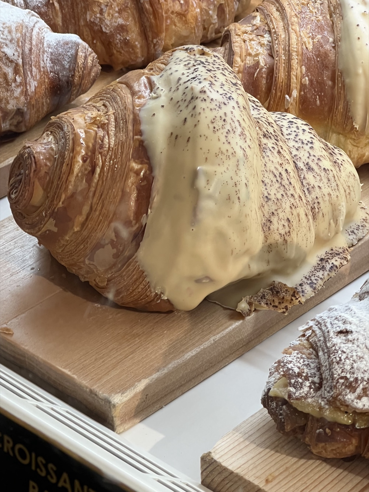
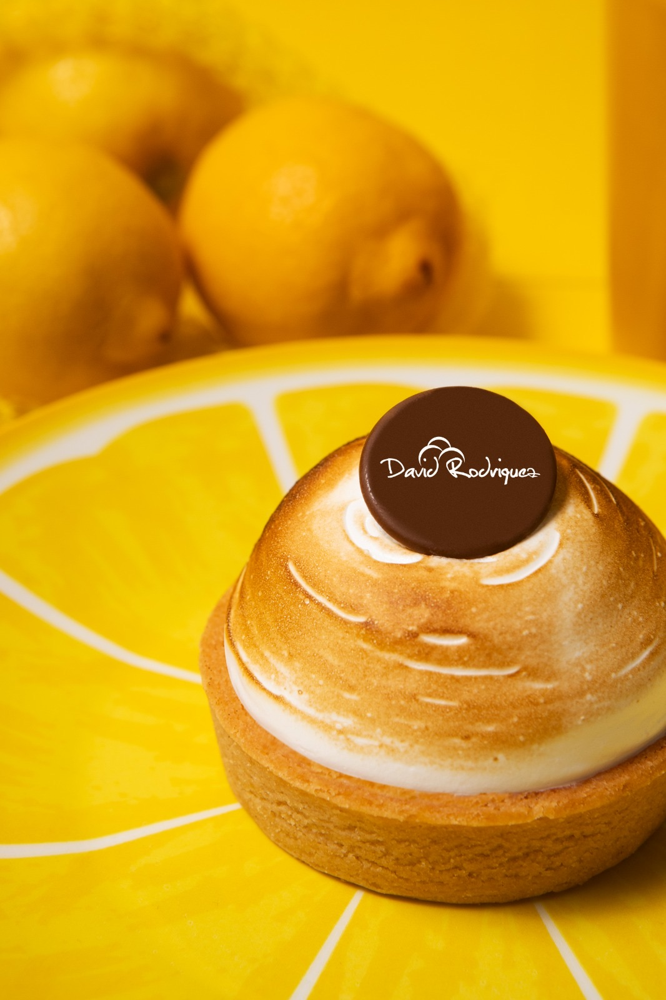
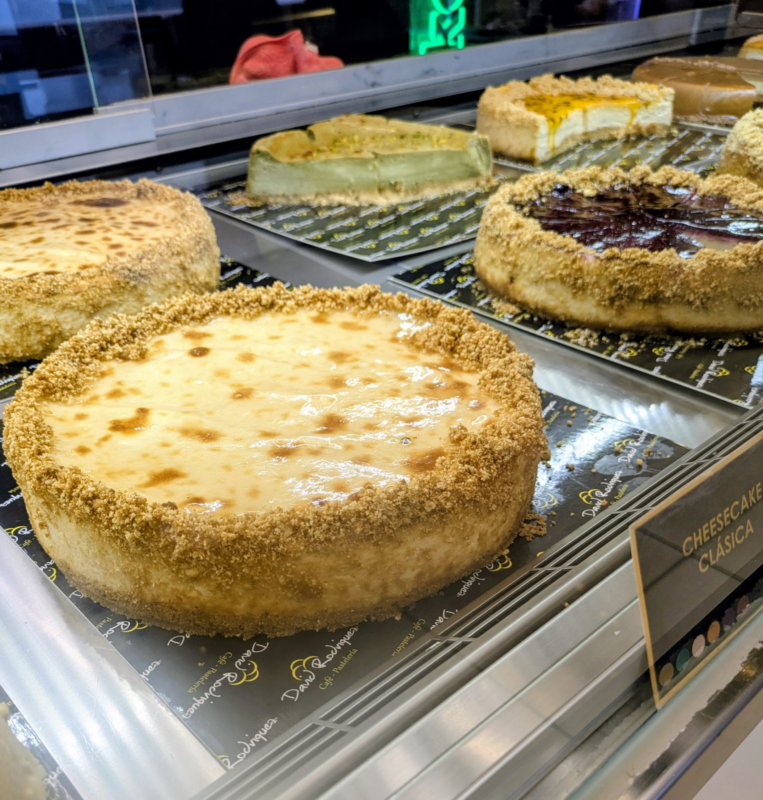
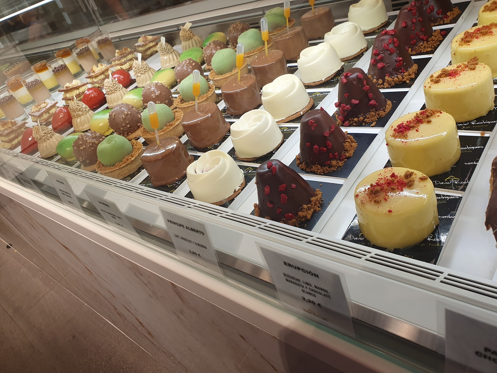
Saison & mehr
„Ab“-Preise als Richtwert (2024–2025). In der Saison bitte vorab per E-Mail oder Telefon reservieren.
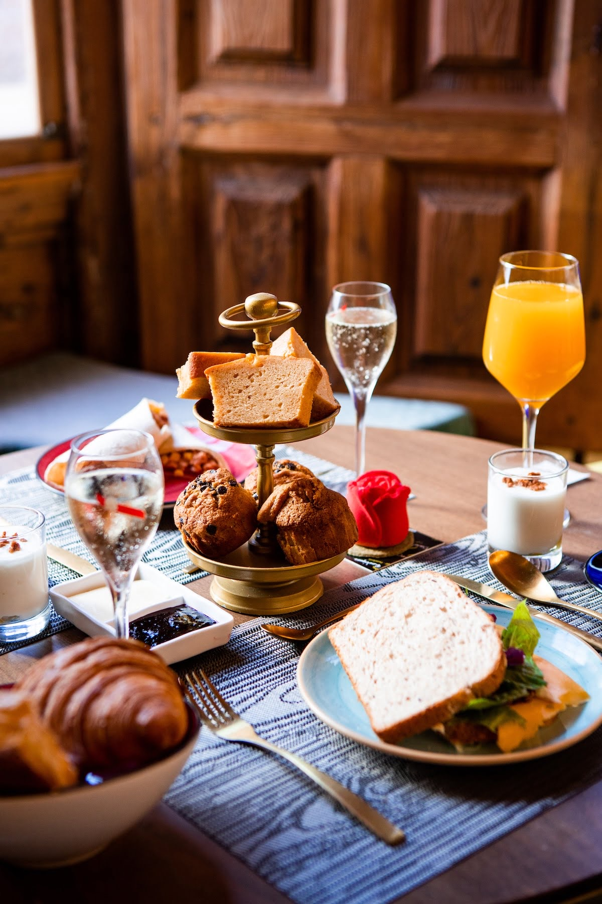
Brunch in unseren Cafés und, mit Vorbestellung, auch nach Hause geliefert.
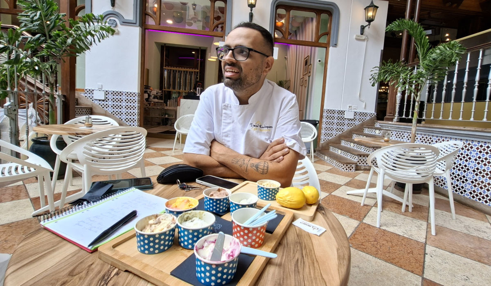
Handgemacht, wenig Zucker, mit Valrhona-Schokolade – und keines ist älter als 24 Std. Pistazie-Mascarpone, Zitrone, Erdbeeren aus Güímar, kanarische Mango, Maracuja oder Käse der Granja Ara.
Foto: Diario de Avisos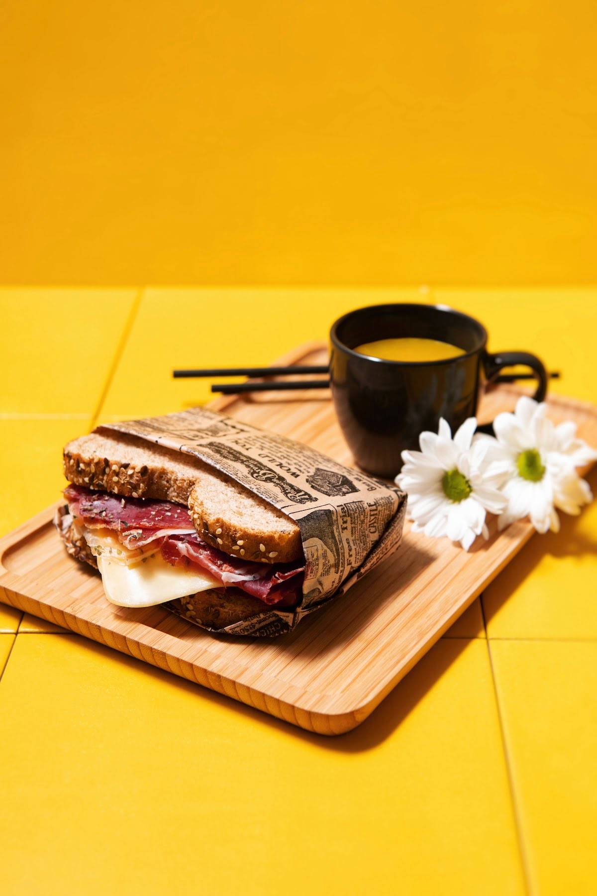
Hähnchen mit Kimchi oder Hähnchen mit Cheddar und karamellisierten Zwiebeln. Dazu Gourmet-Burger.
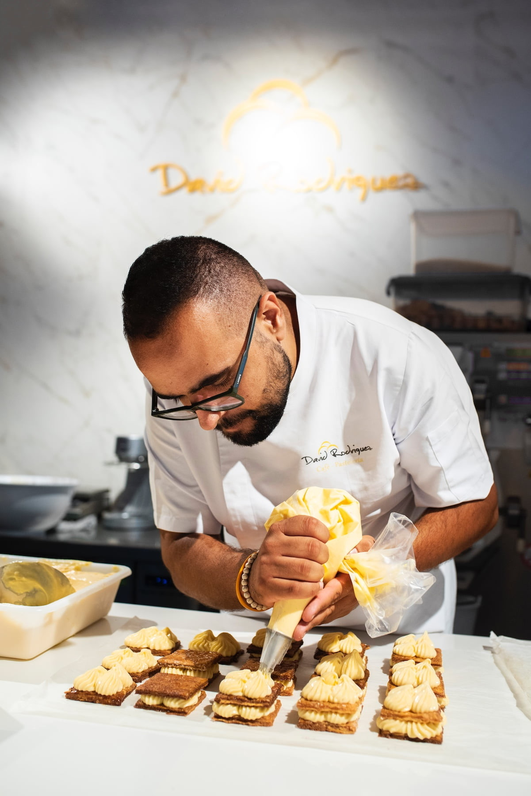
Geschichte
Jesús David Rodríguez wurde in Santa Úrsula geboren und lernte bei seiner Mutter, die die Desserts im Familienrestaurant „Rodríguez“ machte. Aus dem Restaurant wurde später eine Backstube, in der er mit seinen Eltern seine ersten Desserts machte.
Er bildete sich an der Hotelfachschule Hofmann weiter, in Frankreich bei Vallhonrat-Schokoladen und in der Eisherstellung bei José Manuel Marcos Candela, Spanischer Speiseeis-Meister 2011.
Sein Stil: traditionelle französische oder katalanische Patisserie, „mit eigenem Design“.
Bewertungen
„Der Ort ist wunderschön und das Angebot eine glatte 10 […] es lohnt sich, für solche Süßigkeiten zu zahlen, die man nicht in jeder Konditorei findet […] Ich empfehle zu 100 % die Mille-feuille, das Erdbeertörtchen und das Zitronentörtchen.“(übersetzt)„Wahrscheinlich das schönste Café in Puerto de la Cruz […] atemberaubendes Interieur […] Die Desserts sind köstlich, der Kaffee ist sehr gut, und die ganze Atmosphäre wirkt zugleich elegant und gemütlich.“(übersetzt)„Mit das beste Eis, das ich je probiert habe – und das waren viele!! […] Pistazie-Mascarpone war spektakulär, eine sehr, sehr empfehlenswerte Eisdiele.“(übersetzt)„Der Kaffee schmeckt ausgezeichnet, und die Kuchen präsentieren sich schön und sehr lecker. Wir bestellten 2 Americanos, einen Zitronenkuchen und einen Macadamia-Brownie […] Sehr empfehlenswert.“(übersetzt)„Wir haben das Croissant mit weißer Schokolade und das Dessert aus Schokolade und Maracuja geliebt.“(übersetzt)„Sehr leckere Kuchen, die auf der Zunge zergehen, viele verschiedene Sorten Croissants […]“(übersetzt)„die Cheesecakes sind unglaublich lecker – wenn ihr hier seid, unbedingt probieren“(übersetzt)„Wahrscheinlich einer der ALLERBESTEN Orte für Süßes und ZAPEROCO (ein MUSS)… In meiner einen Urlaubswoche war ich 3-mal dort.“(übersetzt)Cafés
Unsere Backstube ist in Santa Úrsula. Von dort kommt jeden Morgen alles, was du in den vier Vitrinen siehst.

Der Ursprung · unsere Backstube
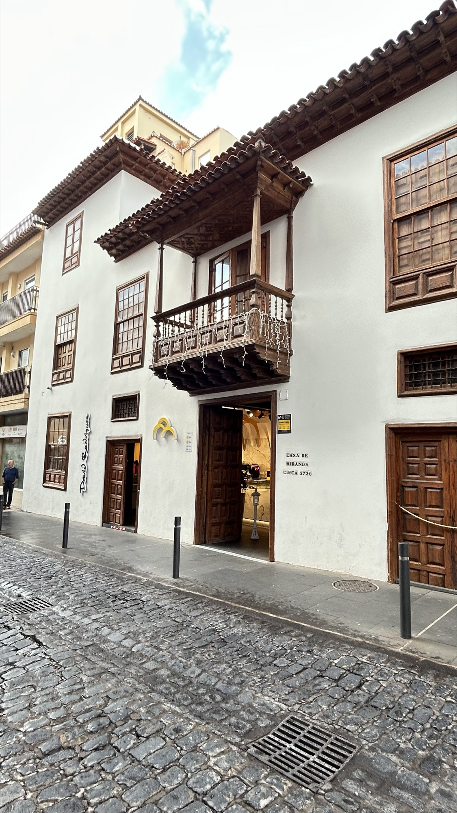
Puerto de la Cruz · Plaza de Europa
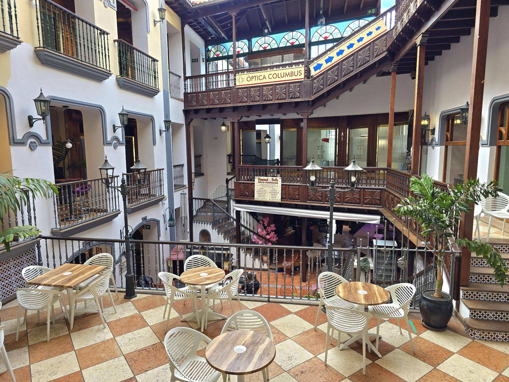
Puerto de la Cruz · Eis & Konditorei
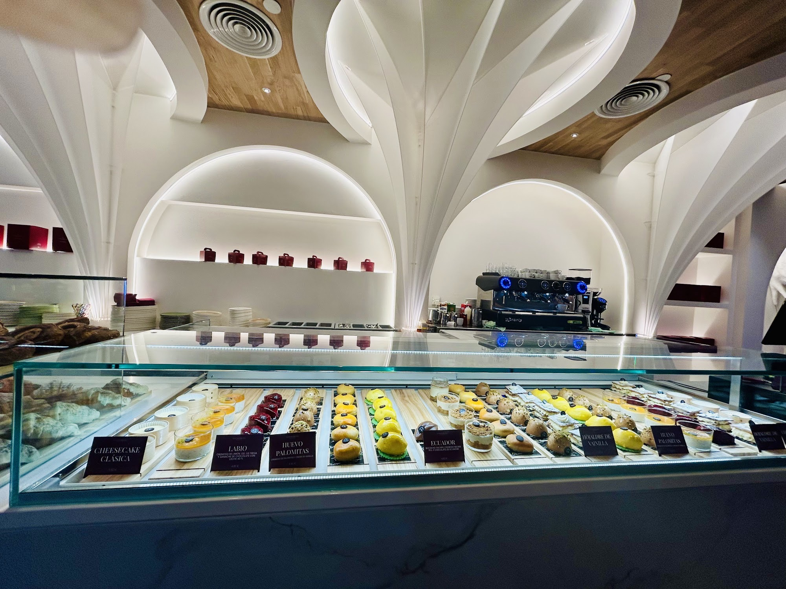
Santa Cruz de Tenerife
Öffnungszeiten laut Google (Oktober 2026).
@david_rodriguez_pasteleria
21K Menschen folgen dem, was aus der Backstube kommt.